$\renewcommand{\Diff}{\mathcal{D}}\newcommand{\dist}{\mathrm{dist}}\renewcommand{\Imm}{\mathcal{I}}\newcommand{\Shape}{\mathcal{S}}\newcommand{\R}{\mathbb{R}}\newcommand{\vol}{\operatorname{vol}}\newcommand{\Vol}{\mathrm{Vol}}\newcommand{\Var}{V}$
<h4> Learning on Geometric Data <br> Through Varifold Representations</h4> <hr> <div class="row" style="margin-top: 100px;"> <div class="col-md-2" align="left" markdown="1"> </div> <div class="col-md-8" text-align="center" markdown="1"> <p text-align="center">$$\textbf{Emmanuel Hartman}\text{, Murad Hossen, Nicolas Charon}$$ $$\text{University of Houston}$$</p><hr><p align="center">SIAM TX/LA, Southern Methodist University, 31 October 2026</p> </div> <div class="col-md-2" align="left" markdown="1"> </div> </div> <div class="row" style="margin-top: 100px;"> <div class="col-md-4" align="left" markdown="1"> </div> <div class="col-md-4" align="center" markdown="1"> </div> <div class="col-md-4" align="right" markdown="1"> <img src="figs/uh_red.png" height="120px" /> </div> </div>
<h4 align="left"> Why Study Shapes? </h4><hr> <div class="row" style="margin-top: 10px;" align="center"> <div class="col-md-4" markdown="1" align="center"> <p><b>Computational Biology/Anatomy</b><br></p> <img src="figs/OnGrowthAndForm.jfif" width="45%" /> <img src="figs/DThomp_fishes.jfif" width="50%" /> <p>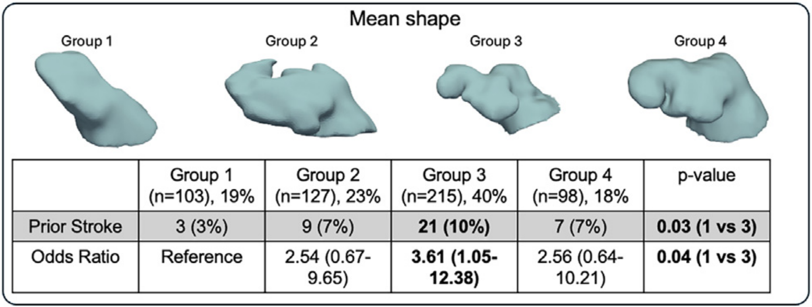</p> </div> <div class="col-md-4" markdown="1" align="center"> <p><b>Computer Vision and Biometrics</b></p> <br> <p>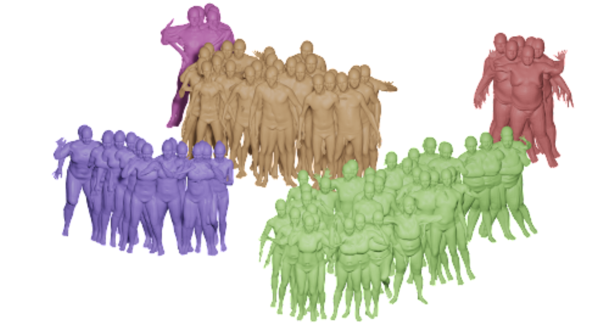</p> <br> <p>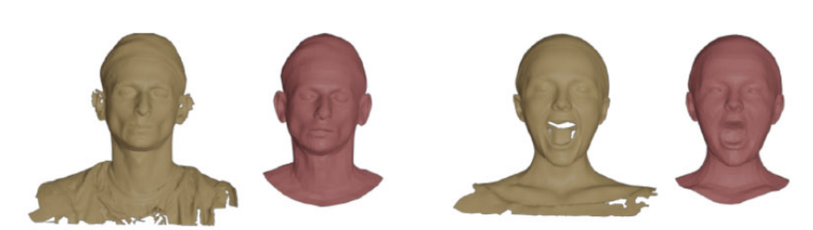</p> </div> <div class="col-md-4" markdown="1" align="center"> <p><b>3D Graphics</b></p> <p>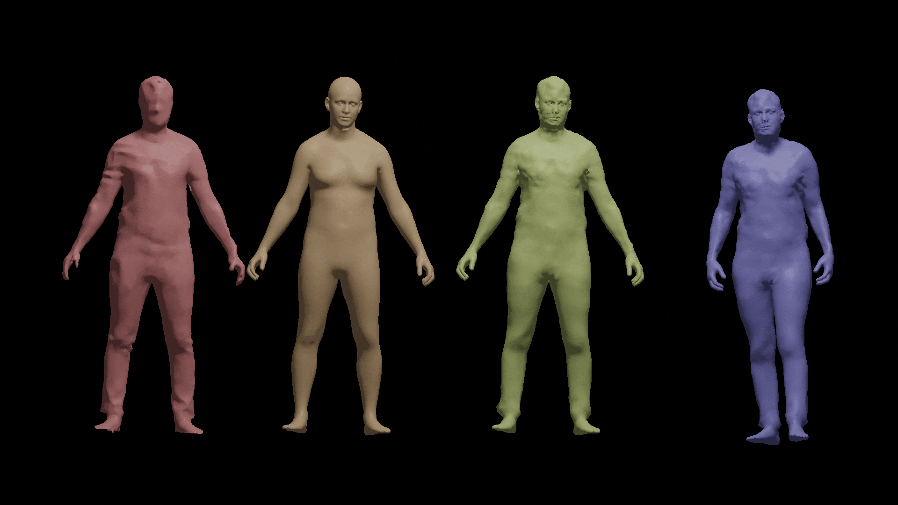</p> <p>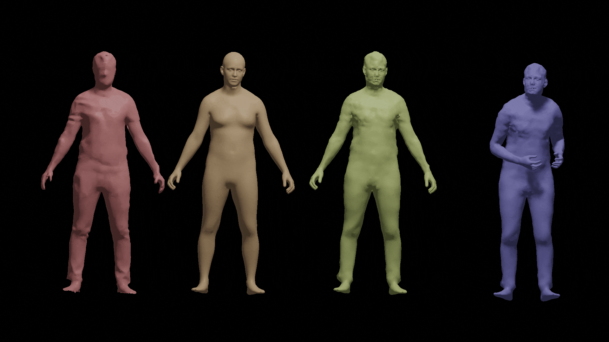</p> </div> </div> <div class="row" style="margin-top: 10px;" align="center"> <div class="col-md-4" markdown="1" align="center"> <p><em>How does anatomy vary across individuals?</em></p> </div> <div class="col-md-4" markdown="1" align="center"> <p><em>Which shapes correspond to one another?</em></p> </div> <div class="col-md-4" markdown="1" align="center"> <p><em>How can we manipulate/generate shapes?</em></p> </div> </div>
<h4 align="left">Challenges with Surface Data</h4><hr> <div class="col-md-4" markdown="1" align="center" vertical-align="center"> <div class="row"> <div class="col-md-12" markdown="1" align="center" vertical-align="center"> <div style="position:relative; width:100%; height:300px;"> <iframe src="titan.html" width="100%" height="300px" style="border:none; position:absolute; top:0; left:0; z-index:1;"> </iframe> <p>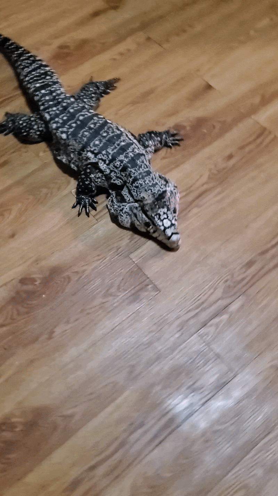</p> </div> </div> </div> <br> </div> <div class="col-md-4" markdown="1" align="left" vertical-align="center"> <iframe src="skull.html" width="100%" height="300px" style="border:none;"> </iframe> <iframe src="LAA_sbs2.html" width="100%" height="150px" style="border:none;"> </iframe> <div class="row"> <div class="col-md-6" markdown="1" align="left" vertical-align="center"><p>Vertices: 1430 <br> Faces: 2865</p></div> <div class="col-md-6" markdown="1" align="left" vertical-align="center"><p>Vertices: 10252 <br> Faces: 20532</p></div> </div> </div> <div class="col-md-4" markdown="1" align="left" vertical-align="center"> <div> <ul style="list-style-position: outside; ; padding: 20; margin: 10;"> <li style="margin-bottom:7px;" ><p>Acessiblility of 3D surface capture (ie photogrammetry) has lead to an abundance of data.<br></p><br></li> <li style="margin-bottom:7px;" ><p>Moreover, 3D scans are increasingly able to capture more topologically complex and detailed data. <br></p></li> <li style="margin-bottom:7px;" ><p>Large curated surface datasets (i.e AMASS ~9.3 million surfaces) create an oppurtunity for learning based approaches. <br></p><br></li> </ul> <p><strong>Challenges For Learning on Surfaces</strong></p> <ul style="list-style-position: outside; ; padding: 20; margin: 10;"> <li style="margin-bottom:7px;" ><p>Detailed surface scans require high-dimensional representations (large number of vertices/faces), and multiple samples in a dataset do not have a fixed dimensionality.<br></p></li> <li style="margin-bottom:7px;" ><p>Surface data includes variability that does not change the shape of the data (e.g., sampling and reparameterization).<br></p></li> </ul> </p> </div> </div>
<h4 align="left">Shape Space and Parameterization Invariance</h4><hr> <div class="col-md-12" markdown="1" align="left" vertical-align="center"><p>Let $M$ be a smooth oriented Riemannian manifold.<br><br></p></div> <div class="col-md-7" markdown="1" align="left" vertical-align="center"><p> <b>Parameterized Objects :</b> bi-Lipschitz regular embedding from $M$ to $\R^n$ <br>$$\mathcal{I} := \operatorname{Emb}_{\text{Lip}}(M,\R^n)$$<br> <b>Reparameterization Group :</b> orientation preserving bi-Lipschitz homeomorphism of $M$ <br>$$\mathcal{D} := \operatorname{Diff}_{\text{Lip}}(M)$$<br> <b>Shape Space:</b> We consider the space of shapes as the quotient space of equivalence classes. <br>$$\mathcal{S} := \mathcal{I}/\mathcal{D}$$ $$[q]=\{q \circ \gamma: \ \gamma \in \mathcal{D}\}$$<br><br></p> <div class="fragment" data-fragment-index="2"><p> </p></div></div> <div class="col-md-5" markdown="1" align="left" vertical-align="center"><br><p>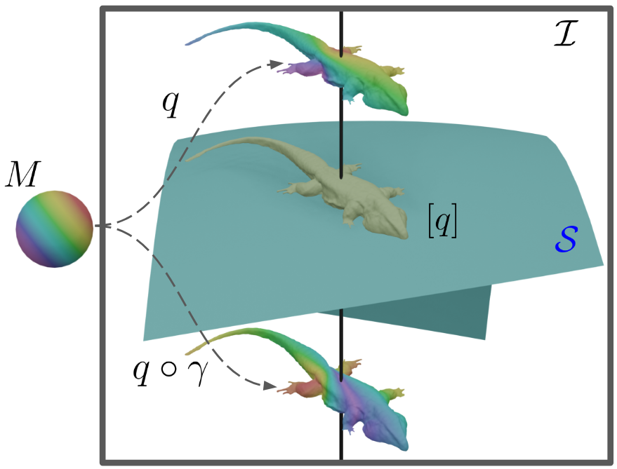</p></div>
<h4 align="left">Varifold Representations of Geometric Data$^{1,2,3,4}$</h4><hr> <div class="row"> <div class="col-md-6" markdown="1" align="left" vertical-align="center"><p> We consider the space of varifolds, $\mathcal{V}$, given by the positive Radon measure on $\R^n \times S^{n-1}$ where $S^2$ denotes the unit sphere.<br><br> Any $q\in \mathcal{I}$ can be canonically mapped to a varifold given by the pushforward measure $\mu_q : =(q,v_q)_*\vol_q \in \mathcal{V}$ where $v_q$ denotes the unit normal vector field and $\vol_q$ is the area measure on $M$.</p><br> <div class="b" align="left"><div class="bbody" align="left"><b>Theorem 1.</b> For any $q\in \mathcal{I}$ and $\gamma\in\mathcal{D}$, it holds that $ \mu_{q\circ\gamma}=\mu_q$. Consequently, one obtains a well-defined map $[q] \in \mathcal{S} \mapsto \mu_q \in \mathcal{V}$ which, in addition, is injective. </div></div> <div class="fragment" data-fragment-index="1"><p>By the Riesz-Markov-Kakutani representation theorem, $\mathcal{V}$ is the dual of $C_0(\R^n\times S^{n-1},\R)$. The duality bracket between $\mathcal{V}$ and $C_0(\R^n \times S^{n-1},\R)$ is given by $$\langle \mu , h\rangle = \int_{\R^n \times S^{n-1}} h(x,v) d\mu(x,v).$$ </p></div></div> <div class="col-md-6" markdown="1" align="center" vertical-align="center"><p>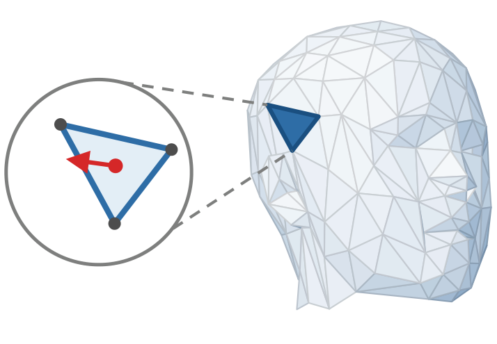</p><p> <br><br>$$ \qquad\qquad\mu_q \approx \sum_{f\in F}a_f \delta_{(c_f,n_f)}$$</p><br><br> <p>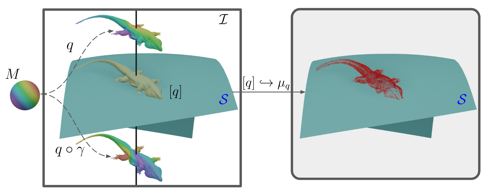</p></div> </div> <div class="row"><hr> <p align="left"><sub>[1] Charon & Trouvé. "The varifold representation of nonoriented shapes for diffeomorphic registration."</sub><br> <sub>[2] Kaltenmark, et al. "A general framework for curve and surface comparison and registration with oriented varifolds."</sub><br> <sub>[3] Feydy et al. "Optimal transport for diffeomorphic registration"</sub><br> <sub>[4] Roussillon & Glaunès. "Representation of surfaces with normal cycles and application to surface registration."</sub><br></p> </div>
<h4 align="left">Test Functions as Parameterization Invariant Features</h4><hr> <div class="row"> <div class="col-md-5" markdown="1" align="left" vertical-align="center"> <p>Recall that for $h\in C_0(n\times S^{n-1}), q\in\Imm, \gamma\in \Diff$, \begin{equation*} \langle\mu_q,h \rangle = \langle\mu_{q\circ \gamma}, h\rangle. \end{equation*} Thus, for a collection of test functions $h_1,...,h_N$, $$\Psi(\mu_q) = \begin{bmatrix} \langle \mu_q, h_1 \rangle \\ \langle \mu_q, h_2 \rangle \\ \vdots \\ \langle \mu_q, h_N \rangle \end{bmatrix} \in \R^N$$ is a fixed-dimensional, parameterization-invariant, feature vector representing $q$.<br><br> </p> <div class = "fragment" data-fragment-index="1" > <div style="border: 4px solid #4a90e2; padding: 12px 15px; border-radius: 6px; background-color: rgba(74, 144, 226, 0.08);" align="center"> <p text-align="center" style="margin: 0; font-weight: 500;">What can we learn from such <br> a representation of a shape?</p> </div> </div> </div> <div class="col-md-7" markdown="1" align="center" vertical-align="center"> <p>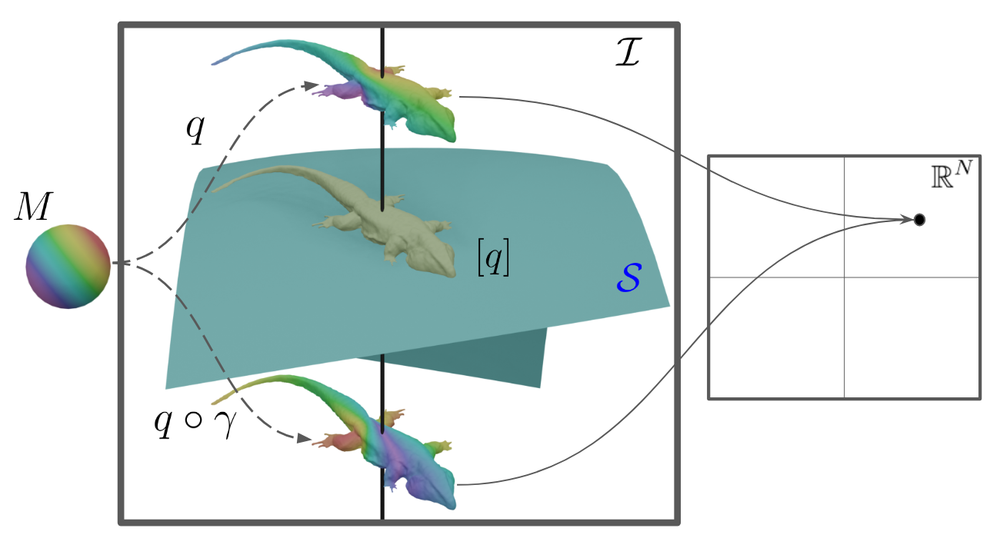</p> <div class = "fragment" data-fragment-index="2"> <div class="b" align="left"><div class="bbody" align="left"><b>Theorem 4 (Universal Approximation Theorem).</b> Let $\sigma: \R \rightarrow \R$ be a continuous non-polynomial function, $C$ a weak-* compact subset of $\mathcal{V}$ and $\psi:C \rightarrow \R$ a weak-* continuous function on $C$. Then for any $\varepsilon >0$, there exist $N \in \mathbb{N}$, $(h_k)_{k=1,\ldots,N}$ in $C_0(\R^n \times S^{n-1},\R)$, $(\beta_k) \in \R^N$ and $(c_k) \in \R^{N}$ such that for all $\mu \in C$: \begin{equation*} \left|\psi(\mu) - \sum_{k=1}^{r} c_k \sigma(\langle \mu, h_k \rangle + \beta_k) \right| \leq \varepsilon. \end{equation*} </div></div> </div> </div> </div>
<h4 align="left"> Approximating Test Functions</h4><hr> <div class="col-md-12" markdown="1" align="left" vertical-align="center"><p> How can we search for a test function $h\in C_0(\R^n\times S^{n-1},\R)$?</p><br><br> <div class="col-md-6" markdown="1" align="left" vertical-align="center"> <div class="fragment fade-left" data-fragment-index="1"> <p>To learn a linear embedding of measures, we discretize the space of test functions via a standard Multi-Layer Perceptron (MLP) $h^\theta:\R^{2n} \to \R.$</p> <p>$$\begin{align} \text{Given } \qquad \mu &= \sum\limits_{f\in F}a_f \delta_{(c_f,n_f)},\\ \left\langle \mu , h^\theta\right\rangle &=\sum\limits_{f\in F}a_fh^\theta(c_f,n_f).\end{align}$$</p> </div> </div> <div class="col-md-6" markdown="1" align="center" vertical-align="center"> <div class="fragment fade-left" data-fragment-index="2"> <p>To learn multi-dimensional embeddings in $\R^N$, we model multiple test functions $h^\theta_1,...,h^\theta_N$ jointly as a single MLP $H^\theta :\R^{2n}\to \R^N$ without sacrificing empirical performance.</p> <p><p>$$\begin{align} \text{Given } \qquad \mu &= \sum\limits_{f\in F}a_f \delta_{(c_f,n_f)},\\ \Psi^\theta(\mu)&=\begin{bmatrix}\langle\mu,h^\theta_1\rangle\\\langle\mu,h^\theta_2\rangle\\\vdots\\\langle\mu,h^\theta_N\rangle\\\end{bmatrix}=\sum\limits_{f\in F}a_fH^\theta(c_f,n_f).\end{align}$$</p> </div> </div> </div>
<h4 align="left">Regression on SMPL-X Parameters </h4><hr> <div class="row"> <div class="col-md-6" markdown="1" align="left"> <p>SMPL‐X [1] is a parametric human body model which takes parameters $p$ and produces a mesh with 10,475 vertices and a fixed simplicial structure.<br><br> From an arbitrary mesh, $q$, our model predicts the SMPL-X parameters $\hat{p}$ such that$$\operatorname{SMPL-X}(\hat{p})\approx q.$$ With only ~41k trainable parameters we attain a mean vertex error of 3.02cm.</p> <p>Our accuracy is comparable to state-of-the-art methods [2], but requires $22\times$ less trainable parameters. <br><br> </p> </div> <div class="col-md-6" markdown="1" align="center"><p>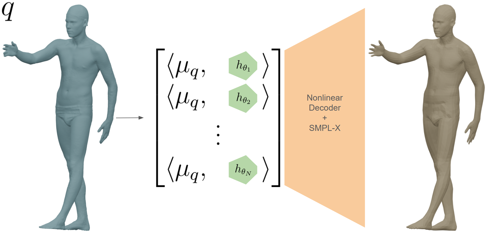</p><br><br><p>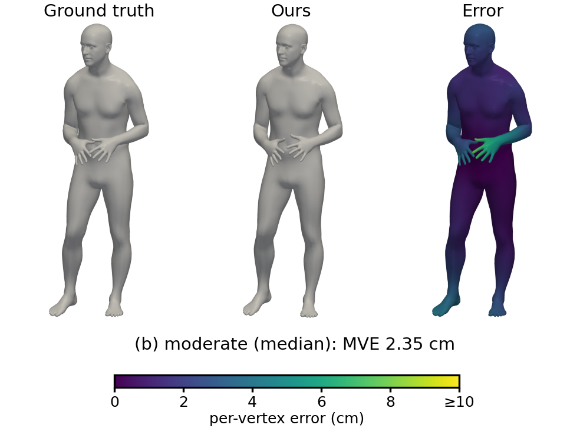</p> <p>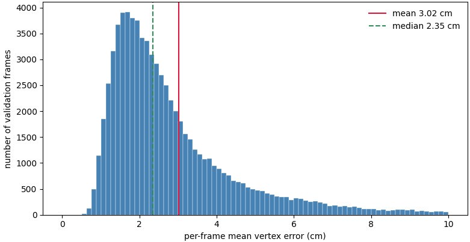</p></div></div> <div class="row"><hr> <p align="left"><sub>[1] Pavlakos et al., "Expressive Body Capture: 3D Hands, Face, and Body from a Single Image" </sub><br> <sub>[2] Feng et al., "Generalizing Neural Human Fitting to Unseen Poses With Articulated SE(3) Equivariance"</sub><br></p> </div>
<h4 align="left">Conclusion and Future Work</h4><hr> <p align="left"><br> We discuss the utility of varifold representations of geometric data for parameterization-invariant features in a deep learning model.<br><br> Our current work is focused on applying this model to other forms of geometric data (such as shape graphs and images).</p> <div class="row"> <div class="col-md-12" markdown="1" align="left"> <center><p>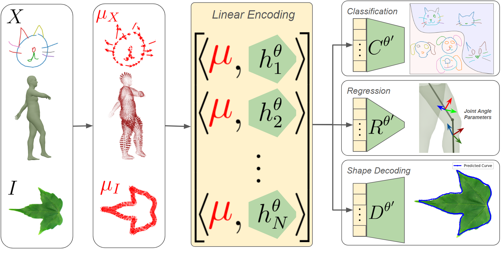</p></center> <center><p>Thank you for your attention!</p></center><hr> <p> This talk is based on:<a href="https://arxiv.org/abs/2506.01189">https://arxiv.org/abs/2506.01189</a><br> and ongoing work with Nicolas Charon and Murad Hossen <b>(Murad will present some experiments using this model in the poster session!)</b></a><br> These slides are available at:<a href="https://emmanuel-hartman.github.io/Talks/Slides/SIAMTXLA26/talk.html">https://emmanuel-hartman.github.io/Talks/Slides/SIAMTXLA/talk.html</a> </p> </div> </div>